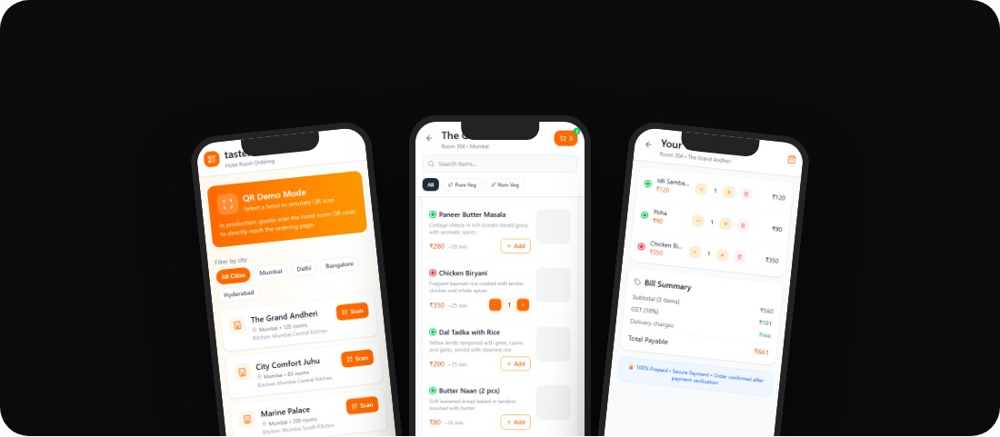
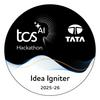
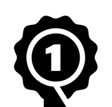
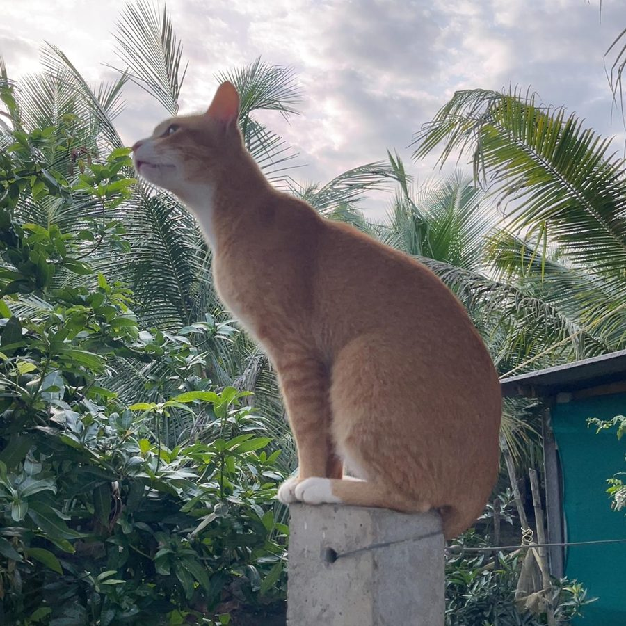
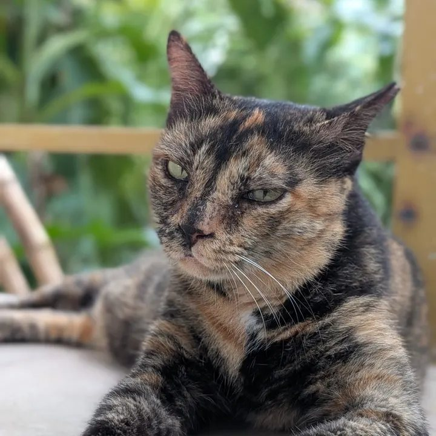

GE Healthcare
Lease, loan and end-of-term workflows rebuilt into one platform, scaled from ~50 to 2,000+ global users.
EnterpriseI’m Arpan, a UX/UI designer who turns tangled enterprise workflows into products people can follow without a manual. I care about cognitive load more than decoration: the parts no one notices are usually the parts everyone feels.
I work across research, design systems and front-end. I build what I design in Angular, carrying a project from the first stakeholder workshop to the shipped interface, most recently for healthcare platforms used by 2,000+ people in 20+ countries.
Arpan ShethUX/UI Designer / Builder · Ahmedabad, open to relocating
Lease, loan and end-of-term workflows rebuilt into one platform, scaled from ~50 to 2,000+ global users.
Enterprise
QR room-service ordering, a kitchen dashboard and an admin panel for multi-hotel cloud kitchens.
Hospitality
An AI-powered learning ecosystem for exam aspirants, with 40+ screens across iOS, Android and web.
EdTech · AI
Three competing booking paths, turned into one guided journey from destination to quote.
TravelHow I design with Claude, Cursor, Figma Make and Codex, from ambiguous brief to tested product.
Process
I simplify complexity rather than decorate it.
Whether it’s lease and loan workflows for GE HealthCare or booking flows for GolfPac, the goal is the same: reduce cognitive load while keeping every bit of business capability. Hands-on Angular means I close the gap between design intent and what actually ships.
I’m happiest where user needs, business goals and engineering constraints meet. Currently at GE HealthCare via TCS, open to Product Designer and Senior UX/UI roles worldwide (90-day notice, negotiable).
Worked with TCS · GE HealthCare · GolfPac · TeeTimes · Pareexa.ai · tasteX · Inospire
Stakeholder workshops, journey mapping and usability testing that ground decisions in evidence, finding where the work has moved on and the product hasn’t.
Information architecture and wireframes that turn approval chains, quote generation and booking into one guided path.
Reusable component libraries that keep multi-module products consistent, so new features ship faster and look like they belong.
Hands-on Angular, AngularJS and PrimeNG. I’ve cut front-end load by around 20% through component-level optimisation.
Claude, Cursor, Figma Make, Codex and Copilot woven into synthesis, prototyping and delivery without cutting corners.
Oct 2022 — Now
Enterprise healthcare workflows and dashboards, scaling the platform from ~50 to 2,000+ global users, on a reusable design system I built across modules.
Jan — May 2026
Guest ordering, kitchen dashboard and super-admin panel on one shared design system. In UAT ahead of rollout.
Sep 2025 — Mar 2026
Product strategy and UX direction for the student journey, plus a scalable component library for iOS, Android and web.
Aug 2024 — Sep 2025
Redesigned booking and trip-planning flows and restructured AngularJS controllers in a front-end modernisation.
Mar 2021 — Oct 2022
Improved front-end performance by ~20% and partnered with stakeholders on redesigns and solution architecture.
Oct 2020 — Mar 2021
Style guides, brand directions, UI design, illustration and micro-animation for client projects.
Certification · Anthropic
Award · TCS

Award · TCS
Award · TCS

Award · TCS
Three delivery awards · TCS
Proud godfather to Jeeru and Masala.
I don’t have a pet of my own, but my friend’s two cats decided I’m family anyway. Jeeru is the ginger one, keeping watch from the garden wall; Masala is the tortoiseshell who looks unimpressed by everything except a good head scratch. They’re the paws and tails this site is made with, and you’ll find both of them in the pixel meadow at the bottom of the page.

